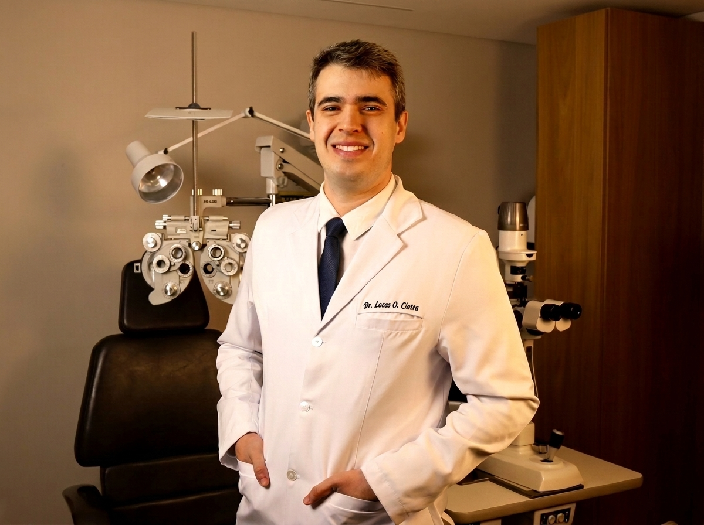

Sua rotina não cabe mais no óculos.
Treino, viagem, tela o dia inteiro, lente de contato que arde no fim do dia. Você já pensou em cirurgia, mas nunca soube se poderia fazer.

Catarata · Refrativa · Presbiopia
Cirurgia refrativa, correção de presbiopia e cirurgia de catarata em Brasília. Cada indicação nasce do Protocolo VISUS: cinco etapas que definem qual solução faz sentido para o seu olho e para a sua rotina.
Tecnologias disponíveis
Treino, viagem, tela o dia inteiro, lente de contato que arde no fim do dia. Você já pensou em cirurgia, mas nunca soube se poderia fazer.
Você afasta o celular para ler, tem um óculos para cada distância e percebe que trocar de óculos virou parte do dia.
Dirigir depois do escurecer incomoda, o farol espalha, e trocar o grau já não resolve como antes.
Grau elevado, córnea fina ou astigmatismo irregular não significam “não dá”. Significam que a solução precisa ser outra.
Três jornadas diferentes, o mesmo processo de avaliação.
Miopia, hipermetropia e astigmatismo. Correção a laser sem uso de lâmina, com perfil de tratamento definido a partir da sua córnea — ou lentes fácicas (ICL) para graus elevados e córneas que não permitem laser.
Conhecer a cirurgia refrativaPara quem passou dos 40 e quer reduzir a dependência dos óculos em todas as distâncias. Avaliamos as estratégias possíveis para o seu perfil, incluindo lentes de foco estendido e monovisão.
Conhecer as opções para presbiopiaA catarata é o momento em que você escolhe como quer enxergar pelos próximos anos. A troca do cristalino permite corrigir grau e astigmatismo no mesmo procedimento, com as etapas de corte realizadas por laser de femtossegundo.
Conhecer a cirurgia de catarataO Protocolo VISUS é o processo de avaliação que antecede qualquer indicação. Ele responde a pergunta que nenhum exame responde sozinho: qual tecnologia faz sentido para a sua vida?
Etapa 01 / V
Mapeamento estruturado da sua rotina: distâncias de trabalho, horas de tela, direção noturna, leitura, esportes, profissão e o que mais incomoda hoje. Também avaliamos expectativa e perfil de tolerância — dois pacientes com exames parecidos podem precisar de abordagens diferentes.
Etapa 02 / I
Biometria óptica (IOLMaster 700), tomografia de córnea (Pentacam), OCT de mácula e nervo óptico, pupilometria, análise dos ângulos kappa e alfa e aberrometria. O OCT de mácula é obrigatório no nosso processo: alterações silenciosas da retina mudam completamente a indicação da lente.
Etapa 03 / S
Avaliação do filme lacrimal e das glândulas meibomianas. Quando há alteração, tratamos e refazemos as medidas. Um cálculo feito sobre um olho seco é um cálculo errado — e essa é uma das causas mais comuns de insatisfação após cirurgia.
Etapa 04 / U
Apresentamos dois ou três cenários viáveis, com os prós e as limitações de cada um: quais distâncias ficam cobertas, o que pode exigir óculos em situações específicas, o que esperar de halos e brilhos. Quando indicado, fazemos teste de tolerância antes de decidir. Você sai com um plano de tratamento por escrito.
Etapa 05 / S
Plano cirúrgico definido com alvo refrativo, planejamento de lentes tóricas guiado por imagem e acompanhamento pós-operatório estruturado — incluindo a possibilidade de refinamento a laser quando houver indicação.
Nenhuma indicação é feita antes das cinco etapas. É mais demorado. É também a razão pela qual conversamos sobre expectativa antes de conversar sobre lente.
Bloco A / A lente
Lentes intraoculares se diferenciam pelas faixas de visão que cobrem e pelo que cobram em troca — em qualidade de contraste, em halos noturnos, em dependência residual para perto. Não há escolha sem compromisso, e quem diz o contrário está vendendo, não indicando.
Trabalhamos com acesso às principais plataformas do mercado, incluindo lentes tóricas, de foco estendido, trifocais, fácicas e ICL. Isso significa que a indicação parte do seu exame — não do que está disponível na prateleira.
Cobre Parcial Não cobre
Esquema ilustrativo das categorias, sem nomes comerciais. A indicação parte do seu exame.
Bloco B / Sem lâmina
É a pergunta que quase ninguém faz em voz alta: alguém vai cortar o meu olho?
Nas nossas cirurgias, as etapas de corte são feitas por laser de femtossegundo — um laser que trabalha em pulsos ultracurtos e faz incisões planejadas no computador, com dimensões e posição definidas antes de você entrar na sala.
Na cirurgia de catarata, o femtossegundo realiza as incisões, a abertura da cápsula que envolve o cristalino e a fragmentação do cristalino. A abertura circular feita por laser tem diâmetro e centralização programados, o que ajuda no posicionamento estável da lente intraocular — algo especialmente relevante quando a lente é tórica ou de foco estendido. A remoção do cristalino continua sendo feita por facoemulsificação.
Na cirurgia refrativa, o femtossegundo cria a lamela corneana com espessura programada, sem uso de lâmina manual.
Bloco C / O laser é ajustado ao seu olho
Corrigir grau a laser não é aplicar uma receita padrão. A plataforma WaveLight EX500 permite escolher o perfil de ablação a partir do que a tomografia mostra sobre a sua córnea:
Leva em conta a curvatura periférica da córnea, preservando o formato natural e ajudando a manter a qualidade da visão noturna.
Permite modular o formato final da córnea, com aplicação em casos selecionados e em estratégias para presbiopia.
Quando indicado, o tratamento pode ser planejado para ampliar a faixa de visão de perto, com avaliação prévia de tolerância.
Qual perfil se aplica ao seu caso é uma decisão da etapa U do Protocolo VISUS — depois dos exames, nunca antes.
Bloco de apoio
| Equipamento | Função |
|---|---|
| IOLMaster 700 | Biometria de alta precisão para o cálculo da lente |
| Pentacam | Tomografia de córnea: triagem de ectasia, astigmatismo e aberrações |
| OCT | Avaliação da mácula e do nervo óptico antes de qualquer indicação premium |
| Verion | Planejamento e orientação do implante de lentes tóricas por imagem |
| Laser de femtossegundo | Incisões, abertura da cápsula e fragmentação do cristalino na catarata; lamela corneana na refrativa |
| WaveLight EX500 | Plataforma de laser excimer com perfis de ablação personalizáveis |
Nossa equipe entende seu caso e organiza a agenda de avaliação.
Mapeamento de rotina e exames completos em uma sessão estruturada. Reserve pelo menos 1 hora.
Você recebe por escrito os cenários possíveis, com prós e limitações de cada um.
Procedimento ambulatorial, com anestesia local e alta no mesmo dia. Um olho por vez, na maioria dos casos.
Retornos programados em 24 horas, 7 dias, 30 dias e 6 meses. Refinamento a laser avaliado quando houver indicação.
Sou o Dr. Lucas Oliveira Cintra, oftalmologista com atuação em cirurgia de catarata e cirurgia refrativa. Me formei em medicina na Pontifícia Universidade Católica de Goiás e fiz residência médica em oftalmologia no Hospital Oftalmológico de Brasília. Estou em formação complementar (fellowship) em cirurgia de catarata e refrativa na Oftalmed — Hospital da Visão.
Escolhi concentrar minha prática em independência visual porque é a área da oftalmologia onde a decisão técnica mais depende de entender a pessoa. Duas córneas idênticas em um exame pertencem a duas vidas diferentes — e é isso que define a indicação.
Atendo pacientes de todas as idades, de jovens que querem se livrar da lente de contato a pacientes com catarata que querem voltar a dirigir à noite com segurança. O processo é o mesmo: entender, medir, explicar as opções e decidir junto.
Dr. Lucas Oliveira Cintra
MÉDICO: CRM-DF 28.484
Oftalmologista: RQE 23.502
[depoimento 1 — relato de atendimento e processo, autorizado por escrito]
[depoimento 2 — relato de atendimento e processo, autorizado por escrito]
[depoimento 3 — relato de atendimento e processo, autorizado por escrito]
Depoimentos refletem experiências individuais. Resultados variam conforme as características de cada olho e não podem ser generalizados.